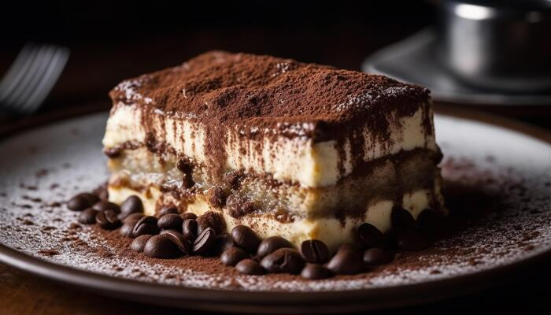

FoodieHub
Home
Cuisines
Profile
Favourites
❤️ Add to Favourites
Classic Tiramisu
Prep time: 25 mins | Chill time: 4 hrs | Serves: 6

Ingredients
6 oz ladyfinger biscuits
1 cup brewed espresso or strong coffee, cooled
3 eggs, separated
1/2 cup sugar
1 cup mascarpone cheese
1 cup heavy cream
Unsweetened cocoa powder (for dusting)
Instructions
Beat egg yolks with sugar until pale and creamy.
Fold in mascarpone until smooth.
In a separate bowl, whip cream until stiff peaks form and fold into the mascarpone mixture.
Dip ladyfingers briefly into coffee and layer in a dish.
Spread half of the mascarpone mixture over the ladyfingers.
Repeat layers and finish with mascarpone on top.
Cover and refrigerate for at least 4 hours or overnight.
Dust with cocoa powder before serving.
⬅ Back to Homepage